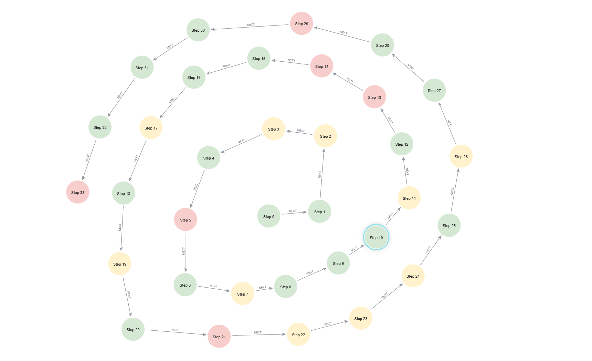
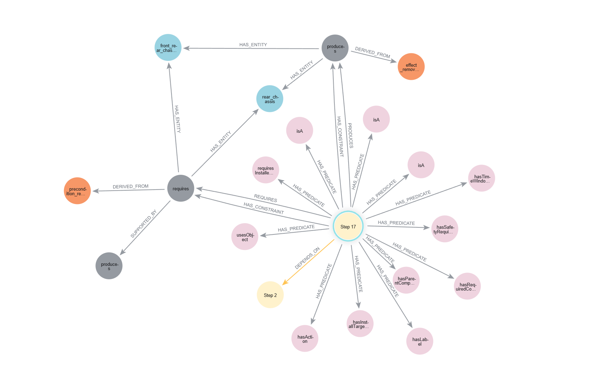
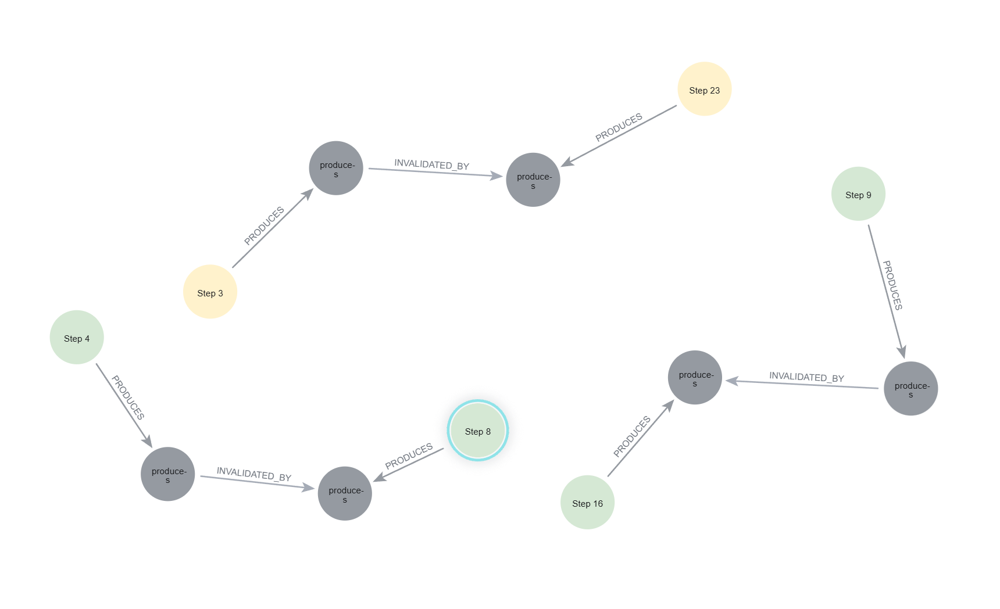
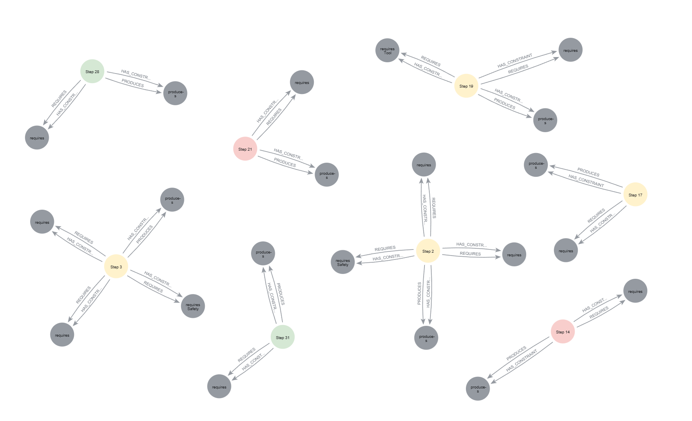
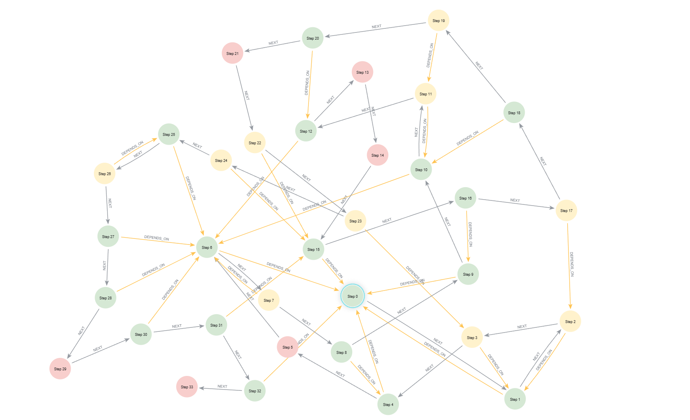
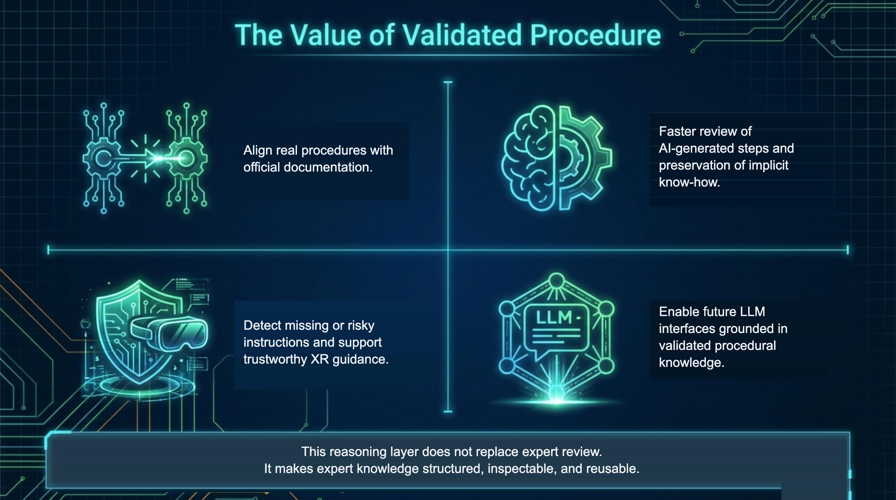

Clip · Goal · Phase · Step · Part
Watch the graph build itself as the assembly plays — nodes and
edges drawing in at the moment the operator performs each step.
Press Play in the embedded view to start the build.
06 / 13

Step status · temporal order

Full representative trace · step 17

Effect lifecycle · invalidation

Constraint evidence

Step dependencies

From graph, to assistance
The graph answers the operator's questions.
Text · Voice
The assistant retrieves a focused subgraph per question and answers
grounded in the dataset — by chat for reading, by voice for
hands-busy moments.
Ask a question in the chat, or toggle Agent in the embedded topbar to talk.